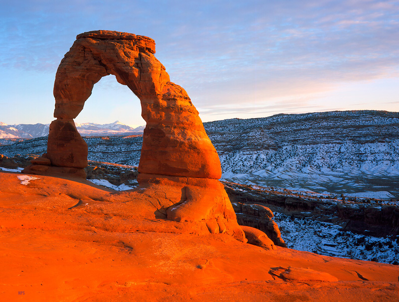
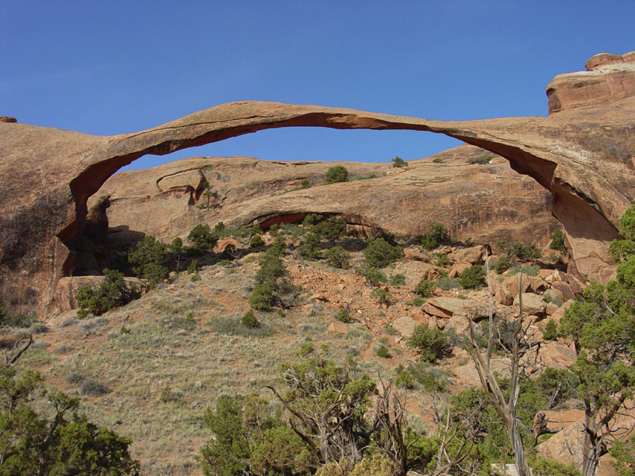
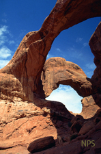
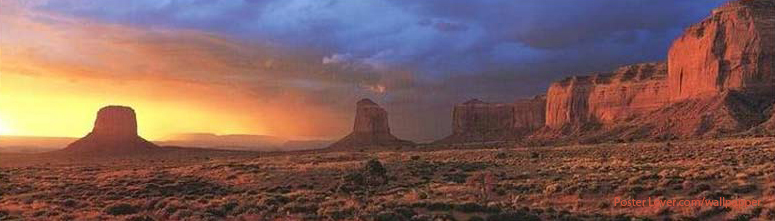

|  | ||
| Arches National Park | ||
| Virtual Tour | History of Arches | Location Map |
General Information About Arches N.P. Arches National Park preserves over 2,000 natural sandstone arches, like the world-famous Delicate Arch, as well as many other unusual rock formations. In some areas, the forces of nature have exposed millions of years of geologic history. The extraordinary features of the park create a landscape of contrasting colors, landforms and textures that is unlike any other in the world. The forces of nature have acted in concert to create the landscape of Arches, which contains the greatest density of natural arches in the world. Throughout the park, rock layers reveal millions of years of deposition, erosion and other geologic events. These layers continue to shape life in Arches today, as their erosion influences elemental features like soil chemistry and where water flows when it rains. Arches is located in a "high desert," with elevations ranging from 4,085 to 5,653 feet above sea level. The climate is one of very hot summers, cold winters and very little rainfall. Even on a daily basis, temperatures may fluctuate as much as 50 degrees. The plants and animals in Arches have many adaptations that enable them to survive these conditions. Some species are found only in this area. The diversity of organisms reflects the variety of available habitat, which includes lush riparian areas, ephemeral pools, dry arroyos, mixed grasslands and large expanses of bare rock. National Park Service Content/www.nps.gov 
|
||
Page Created by Patrick Gorman. Updated 11/13/11